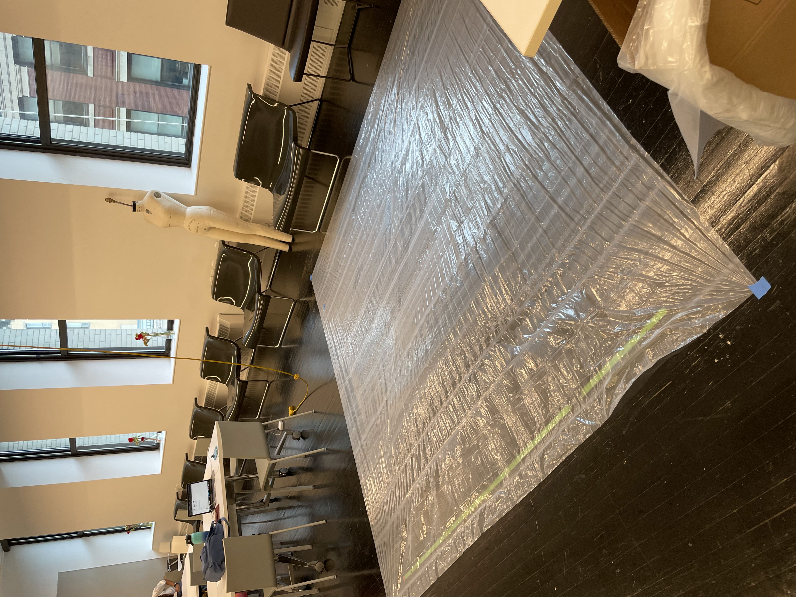
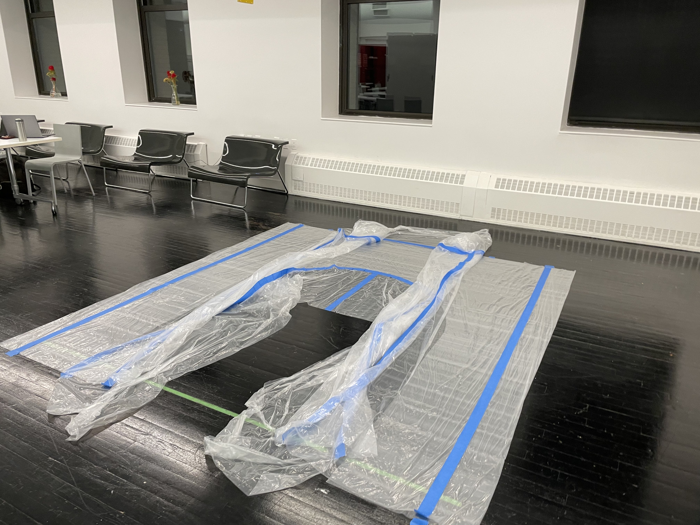
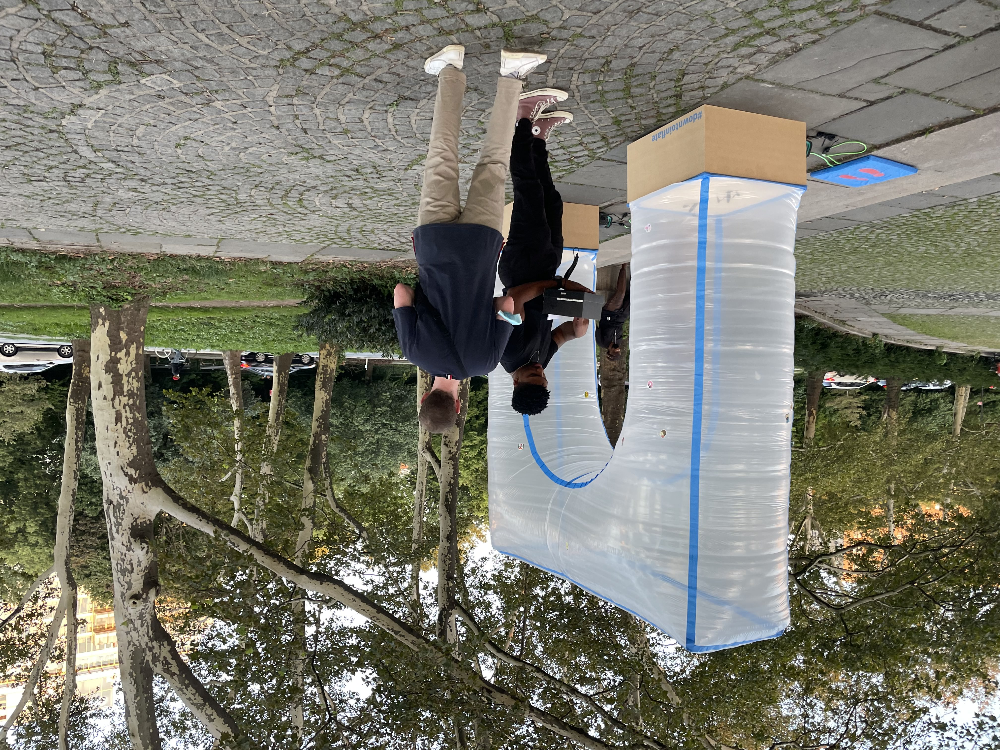

Instruction Sets for Strangers Final
Peilin Chen & Franco Chen
The two days leading up to the deployment was spent actualizing the structure. While we had determined a size for the arch, we still created a mockup on a wall to
understand just how large or small the opening was. After we were satisfied, we proceeded with carefully laying out the plastic tarp to begin the process. The form
in the end was close to what we had initially imagined at 12ft tall. Because of some limitations of the material, namely the 9' runs the sheets came in, we had to
consider another approach.
The approach we decided on as to take the 9' dimension and create the inflatable out of that. To augment the height, we'd build a base that was 18 inches tall. This also
served as a way to hide some of the mechanics of the installation and also weight down the structure to prevent it from flying away. Lastly, we imprinted a hashtag
#downtoinflate onto the base in hopes others will take the cue and help us document their own personal interactions.


The final prototype was deployed on a Saturday just before sunset. We had observed this to be the time when most people would be passing through the plaza after leaving Propspect Park. The location chosen was on the steps leading from the Arch to the fountain, so that it was in plain view to people coming from either direction. One important factor in choosing this location was also the ability for users to photography themselves with the fountain behind them. Upon reflection, we realized this is nothing more than a Rube Goldberg Machine to create a backdrop for photos. We had another reflection as well about the few friends who had helped with the setup and their proximity to the arch during the installation. This altered some of the interactions we had and either encouraged or discouraged users from interacting with the installation.

The following photos and videos document the interactions we received. Because of the setup time and duration of the generation, the interactions we had were limited, but a few people showed interest and approached with some hesitation.



We noticed there were a few types of intereactions. Mostly, the interaction we received were just curious looks. These groups were either preoccupied or disinterested and did not approach the buttons nor the inflatable. The other interaction we received were people who passed through the arch, but didn't interact with the buttons. To this, we consider it a "half success" as they are engaging with the inflatable in a spatial manner. The last interaction was our desired one of inflating.